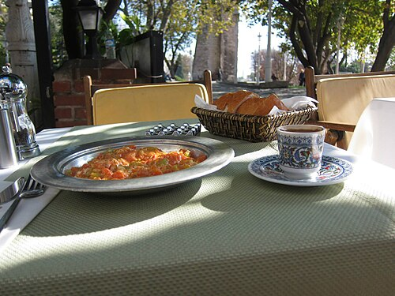
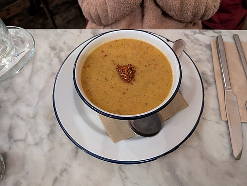

Tarifler
| Tarif | Kategori | Süre | Kişi |
|---|---|---|---|
| Menemen | Kahvaltı | 15 dakika | 2 |
| Mercimek Çorbası | Çorba | 40 dakika | 4 |
Menemen

Malzemeler
- 2 yumurta
- 2 domates
- 1 yeşil biber
- 1 yemek kaşığı sıvı yağ
- Tuz
Hazırlanışı
- Biberi doğrayıp yağda kavur.
- Domatesleri doğrayıp ekle ve biraz pişir.
- Yumurtaları kırıp karıştır.
- Tuzunu ekleyip birkaç dakika daha pişir.
Mercimek Çorbası

Malzemeler
- 1 su bardağı kırmızı mercimek
- 1 soğan
- 1 havuç
- 5 su bardağı su
- Tuz
Hazırlanışı
- Mercimeği güzelce yıka.
- Soğanı ve havucu doğra.
- Hepsini tencereye alıp suyu ekle.
- Mercimekler yumuşayana kadar pişir.
- Tuzunu ekleyip blenderdan geçir ve servis et.